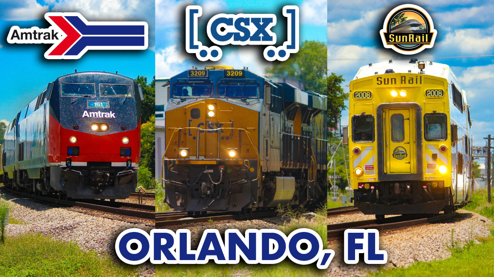

Miguel Vazquez, a Digital Media major at Seminole State College, currently serves as the Vice President of Full Spectrum Support at the Oviedo campus. He was born on August 12, 2004, in San Juan, Puerto Rico, and raised in Orlando, Florida. Since January 2013, Miguel has had a strong interest in trains. Over the years, he has been involved in various clubs, including a theater class during his senior year at Timber Creek High School, and a LEGO-based club called Brix Architecture Club at the Seminole State's Oviedo campus.
Outside of academics, Miguel has pursued several hobbies that bring him great satisfaction. One of his main passions is producing videos and taking photos of trains—an activity known as Railfanning. He shares this content on his YouTube channel, SunRailMV. Through Railfanning, he explores train schedules and routes, providing insight into where the trains come from and where they are headed.
During high school, Miguel began taking digital media courses, starting with photography in his sophomore year. There, he learned how to develop projects and use Adobe Photoshop to edit photos. He later applied these skills to other projects outside of class, such as creating thumbnails for his YouTube videos.
After graduating in 2023, Miguel enrolled in Seminole State College to major in Digital Media. Since then, he has expanded his skill set by learning new programs and tools to improve his project work. For example, he began using Adobe Illustrator in his first fall semester and also learned video editing for various assignments.
List of Skills
Adobe Photoshop
Layers
Sky Replacement
Color Adjustment
Quick Selection Tool
Adding Type and Vector Graphics
Adobe Illustrator
Logo Design
Typopgarphy
PNG Image Insertation
Scale and Rotate Tools
GitHub
Web Development
Stattic Websites
Code Review
Work Samples
"ORL to FTL via Brightline" Thumbnail
In this video, Vazquez makes history as the first person to ride the Brightline train from Orlando to South Florida. This remarkable feat is documented through a voiceover, showcasing the dedication and hard work that went into creating this innovative project.
The video’s thumbnail is meticulously crafted with yellow lines meticulously attached to a black opacity rectangle. The thumbnail that reads "ORL to FTL via Brightline", represnts the code versions of the city names, Orlando and Fort Lauderdale, which serve as the destination for the journey depicted in the video.
"Amtrak Duo in DeBary, FL" Thumbnail
This thumbnail was created using Adobe Photoshop, where an arrow was added to effectively illustrate the visible image. The image depicts the Siemens ALC-42 Chargers trailing behind the southbound Amtrak Auto Train as they bypass the DeBary Station. A heritage sleeping car is also seen in the second image. The video titled “Amtrak Duo in DeBary, FL” likely depicts the two trains that appeared in this video: the southbound Auto Train and the southbound Silver Star train. It’s worth noting that the latter route would later become the Chicago-Miami Floridian route a few months after the filming of this video.
"Railfanning in Orlando, FL ft. Amtrak 161" Thumbnail

This thumbnail comprises three images featuring railroad logos, illustrating the trains as photographed in June 2024 near Orlando, Florida. Notably, the CSX logo is prominently displayed above the freight train in the center of the thumbnail. Among the trains depicted, Amtrak heritage unit 161, a Phase I unit, stands out as the most efficient, leading the northbound Silver Meteor train.
Pattern Repetition Mural Mockup
Conceived during the Design Fundamentals course, the mockup room most accurately depicts the room’s wall and the optimal location for mural placement, potentially as a bedroom. The mural’s inspiration stems from the repetition of patterns, resulting in a circular and square design created in distinct colors. The blue, pink, and purple livery evokes a nostalgic association with Miami Vice.
"Paris" Alphabet Word Art
The alphabet word art project from the Design Fundamentals course stands out as one of the most impressive creations ever undertaken. The word “Paris” is an intriguing word art design that cleverly incorporates various objects that align with the letter’s shapes. Notably, the Eiffel Tower that matches the A-letter serves as the most representative object, as this iconic landmark is situated in Paris, France.
*Notice that the first three thumbnails from the sample works provide a direct link to the corresponding video on YouTube.